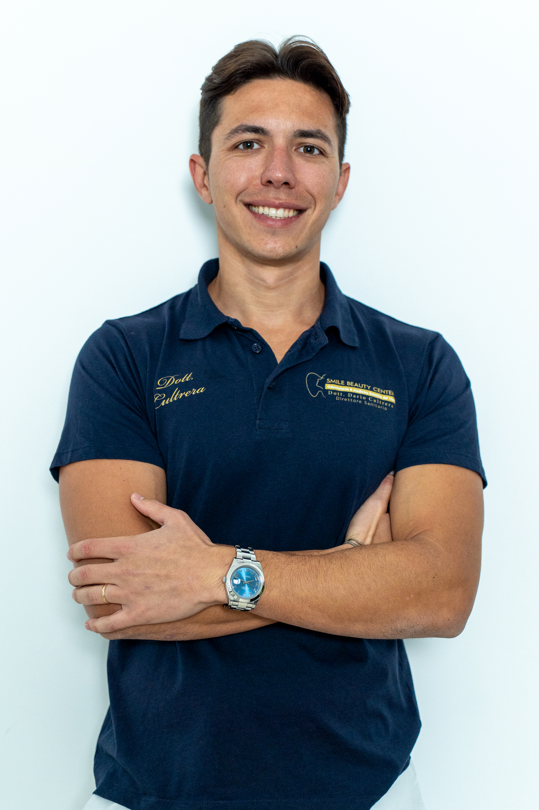
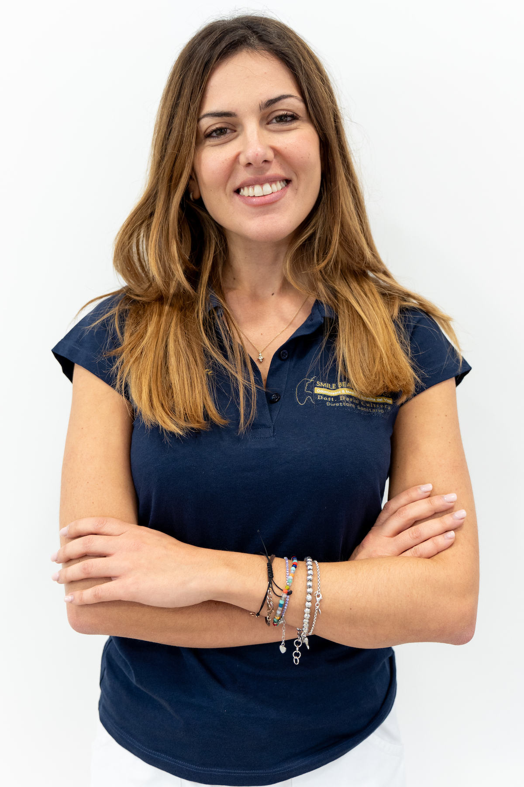
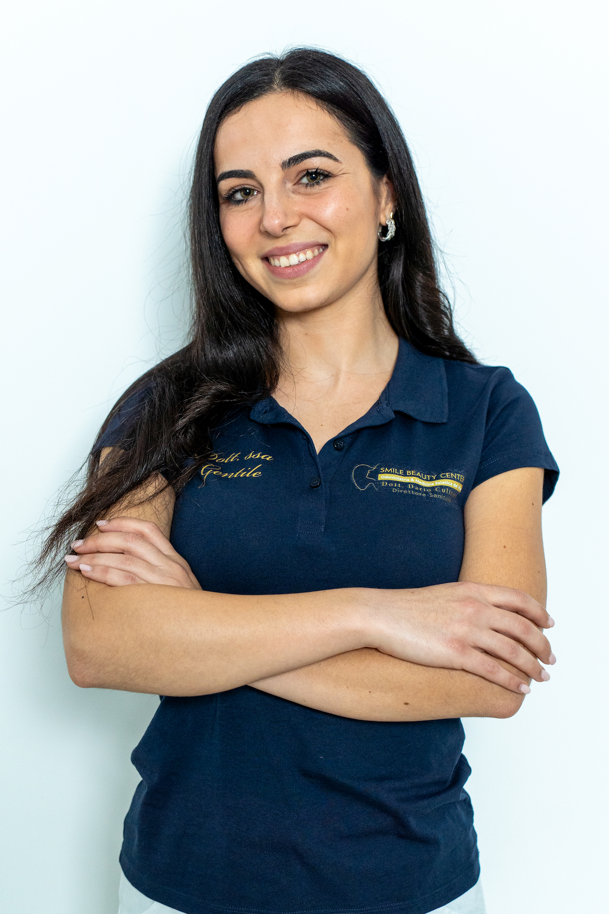
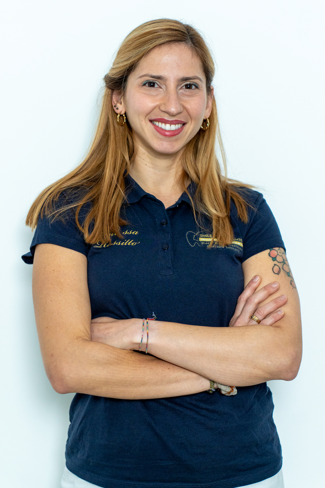

Operatori Sanitari

Dott. Dario Cultrera
Implantologia e Medicina Estetica

Dott.ssa Federica Casella
Ortodonzia e Gnatologia

Dott. Francesco Musumeci
Conservativa e Endodonzia

Dott.ssa Giulia Gentile
Pedodonzia e Conservativa

Dott.ssa Maria Cristina Rossitto
Igiene Dentale